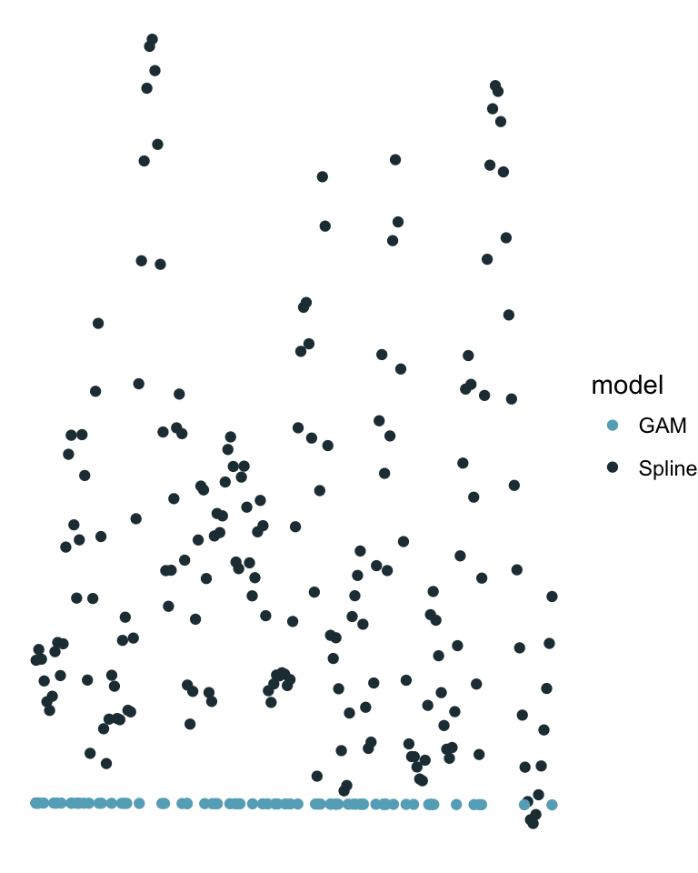

1 R development
The following section covers tools that help and speed up developing R:
yeomandevtoolstestthatroxygen2covrlintrusethis
1.1 Creating R packages
If you have yeoman installed, you can use the R-bones generator in order to initialize a complete project. This gives you the following barebone:
yo r-bones
ls -la newpkg## total 1624
## drwxr-xr-x 26 simondi 1029 884 Jan 24 22:31 .
## drwxr-xr-x 32 simondi 1029 1088 Jan 24 22:32 ..
## -rw-r--r-- 1 simondi 1029 220 Jan 22 20:24 .Rbuildignore
## drwxr-xr-x 4 simondi 1029 136 Jan 23 20:32 .Rproj.user
## -rw-r--r-- 1 simondi 1029 410 Jan 22 20:24 .codecov.yml
## -rw-r--r-- 1 simondi 1029 51 Jan 22 20:24 .gitattributes
## -rw-r--r-- 1 simondi 1029 421 Jan 22 20:24 .gitignore
## -rw-r--r-- 1 simondi 1029 556 Jan 22 20:24 .lintr
## -rw-r--r-- 1 simondi 1029 829 Jan 23 15:44 .travis.yml
## -rw-r--r-- 1 simondi 1029 176 Jan 22 20:24 .yo-rc.json
## -rw-r--r-- 1 simondi 1029 548 Jan 23 20:31 DESCRIPTION
## -rw-r--r-- 1 simondi 1029 35141 Jan 22 20:24 LICENSE
## -rw-r--r-- 1 simondi 1029 56 Jan 23 20:47 NAMESPACE
## drwxr-xr-x 4 simondi 1029 136 Jan 23 20:45 R
## -rw-r--r-- 1 simondi 1029 556 Jan 24 22:31 README.md
## -rw-r--r-- 1 simondi 1029 93 Jan 22 20:24 TODO.md
## -rw-r--r-- 1 simondi 1029 136 Jan 22 20:24 VERSIONS.md
## -rw-r--r-- 1 simondi 1029 836 Jan 22 20:24 appveyor.yml
## drwxr-xr-x 11 simondi 1029 374 Jan 24 22:31 docs
## drwxr-xr-x 3 simondi 1029 102 Jan 22 20:24 inst
## drwxr-xr-x 3 simondi 1029 102 Jan 23 15:44 man
## -rw-r--r-- 1 simondi 1029 354 Jan 24 11:28 newpkg.Rproj
## -rw-r--r-- 1 simondi 1029 736082 Jan 23 20:42 newpkg.html
## drwxr-xr-x 2 simondi 1029 68 Jan 23 20:47 src
## drwxr-xr-x 4 simondi 1029 136 Jan 22 20:24 tests
## drwxr-xr-x 3 simondi 1029 102 Jan 22 20:24 vignettes1.2 Writing R packages
When creating an R package devtools and covr covers almost any functionality required. The following functions delineate how my typical workflow looks:
devtools::create("newpkg")
devtools::test()
devtools::document()
devtools::check_cran()
devtools::lint()
devtools::run_examples()
covr::package_coverage()
devtools::install()
devtools::use_rcpp() This basically covers your complete development life cycle (except code coverage). devtools is tremendously useful. If you look for sth that helps you write packages, devtools has a function for it. For all other things, use usethis.
usethis::use_namespace()
usethis::use_code_of_conduct()
usethis::use_travis()
usethis::use_vignette()
usethis::use_gpl3_license()1.3 Testing code
Right after creating your package, you should write your first test (yes, really). Testing is essential for writing good software. The same way as programming languages change your way of thinking, do unit tests change your way of writing functions. testthat is probably the best way to go here. Tests are usually put in tests/testthat. You can use:
devtools::use_testthat()to create a test suite automatically. A test would look like this:
testthat::test_that("i know my math", {
testthat::expect_equal(g(), 2)
})
testthat::test_that("i know my math", {
testthat::expect_false("wrong" == "right")
})Let’s test this.
devtools::test("./newpkg")## Loading newpkg## Testing newpkg## ✔ | OK F W S | Context
##
⠏ | 0 | hello
⠋ | 1 | hello
⠙ | 2 | hello
✔ | 2 | hello
##
## ══ Results ════════════════════════════════════════════════════════════════
## OK: 2
## Failed: 0
## Warnings: 0
## Skipped: 0A function ideally does one task and one task only. Functions with side effects, multiple operations or exceedingly large method body easily introduce bugs. Keep your functions concise! This also simplifies testing, because it is easier to track down a bug in a shorter function.
1.4 Documenting code
Having written the first unit test, we can create the actual function for it and its documentation using roxygen2:
#' @title Adds 1 and 1
#'
#' @description This magnificent function computes the sum of 1 and 1.
#'
#' @export
#'
#' @return returns 2
#'
#' @examples
#' a <- g()
#' print(a)
g <- function() 1 + 1Then build the documentation:
devtools::document("./newpkg")## Updating newpkg documentation## Loading newpkgAn excellent help for creating documentation (of S3 and S4) is for instance pckdev or the official vignette.
1.5 Checking code
If you want to submit your package to CRAN or Bioconductor certain criteria must be fulfilled. Some of which can be tested by checking or package like this:
devtools::check_cran("./newpkg")## Checking 1 CRAN packages =================================================## Results saved in /var/folders/cx/v45t2v2n6b548_vfn76vnzlw0050sr/T//RtmpBLPQQw/check_cran70863c8cc902## Package library: /private/var/folders/cx/v45t2v2n6b548_vfn76vnzlw0050sr/T/RtmpBLPQQw/R-lib, /Library/Frameworks/R.framework/Versions/3.4/Resources/library## Installing dependencies --------------------------------------------------## Installing 1 packages: ./newpkg## Skipping 1 packages without source:./newpkg## Checking packages --------------------------------------------------------## Checking 0 packages:## Package library: /private/var/folders/cx/v45t2v2n6b548_vfn76vnzlw0050sr/T/RtmpBLPQQw/R-lib, /Library/Frameworks/R.framework/Versions/3.4/Resources/library## NULLThis does not test for Bioconductor though. For this you have to install BioCheck manually and call R CMD BiocCheck newpkg*.tar on the command line.
1.6 Static code analysis
lintr checks your code for style, syntax error and possible issues. You can also incorporate lintr in your unit tests and let them fail, if lints are discovered.
if (requireNamespace("lintr", quietly = TRUE)) {
test_that("this is lint free", {
lintr::expect_lint_free()
})
}What lintr considers worth reporting can be customized in a .lintr file in your package root directory.
Let’s see if our small package is lint free:
devtools::lint("./newpkg")## Linting newpkg....## R/bad_bad_file.R:3:1: style: lines should not be more than 80 characters.
## myRet = a+b
## ^~~~~~~~~~~~~~~~~~~~~~~~~~~~~~~~~~~~~~~~~~~~~~~~~~~~~~~~~~~~~~~~~~~~~~~~~~~~~~~~~~~~~~~~~
## R/bad_bad_file.R:3:79: style: Variable and function names should be all lowercase.
## myRet = a+b
## ^~~~~
## R/bad_bad_file.R:3:85: style: Use <-, not =, for assignment.
## myRet = a+b
## ^Whoops!
1.7 Running examples
Examples are extremely helpful both for the user and debugging purposes. When we documented our function g we already have an example how to use the function. We can manually call all examples using:
devtools::run_examples("./newpkg")## Updating newpkg documentation## Loading newpkg## Running 1 example files in newpkg ----------------------------------------## Loading newpkg## Running examples in g.Rd -------------------------------------------------## >
## > a <- g()
## > print(a)
## [1] 2## Loading newpkg1.8 Code coverage
covr lets you check how much of your code is used and tested. If you created a package just run:
covr::package_coverage("./newpkg")## newpkg Coverage: 50.00%## R/bad_bad_file.R: 0.00%## R/newpkg.R: 100.00%Having high code coverage usually correlates with a good testing suite. The more functionality is tested, the larger the code coverage.
1.9 Profiling and benchmarking
If you think your code runs slowly, you can try to find the bottleneck, for instance, using profvis and microbenchmark.
library('profvis')
library('gam')
data(kyphosis)
profvis::profvis({
sp <- stats::spline(kyphosis$Age, kyphosis$Number, method="n")
gm <- gam::gam(Number ~ Age, family=poisson, data=kyphosis)
df <- data.frame(
X = c(sp$x, kyphosis$Age),
Y = c(sp$y, predict(gm, kyphosis)),
model = c(rep("Spline", length(sp$x)),
rep("GAM", length(kyphosis$Age))))
g <- ggplot(df) +
geom_point(aes(x=X, y=Y, color=model)) +
theme_void()
print(g)
})
Often it however suffices to just benchmark two methods against each other.
f <- function(n) {
sum <- 0
for (i in seq(n)) sum <- sum + i
}
g <- function(.) sum(.)
microbenchmark::microbenchmark(f(10000), g(10000))## Unit: microseconds
## expr min lq mean median uq max neval cld
## f(10000) 269.755 270.6385 303.66440 271.5720 273.0665 3389.386 100 b
## g(10000) 1.294 1.5430 17.18071 2.2855 2.5575 1481.106 100 a1.10 Creating a landing page
At this point you are finished writing your package and you want to provide it to a large user base. A nice landing page often helps gaining popularity. The easiest way to do so is using pkgdown.
pkgdown::build_site(pkg= "./newpkg")This creates a web-page like this:

A good example can be found here.